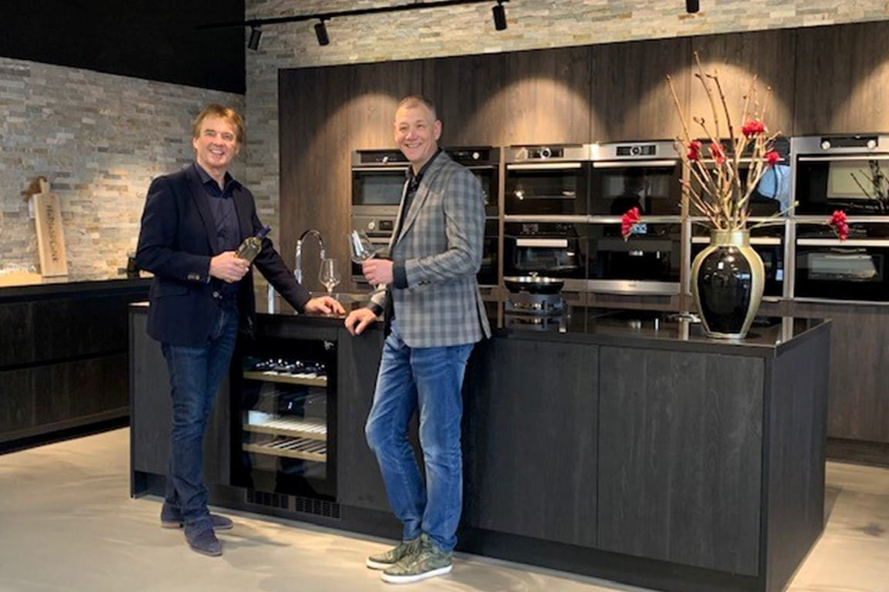
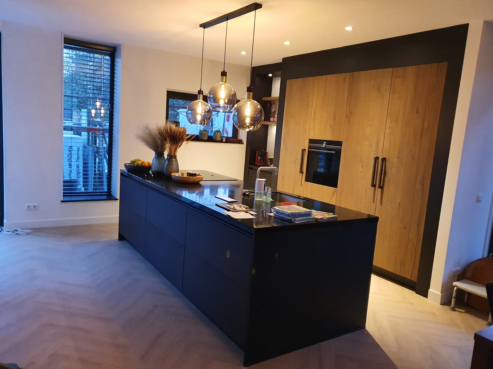
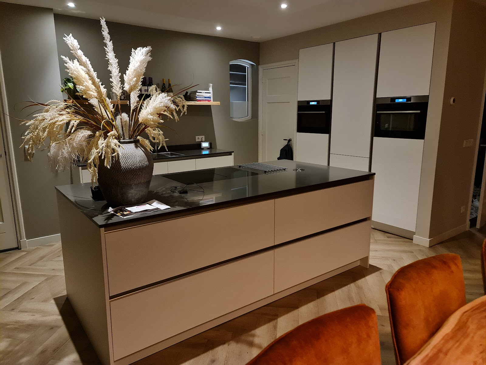
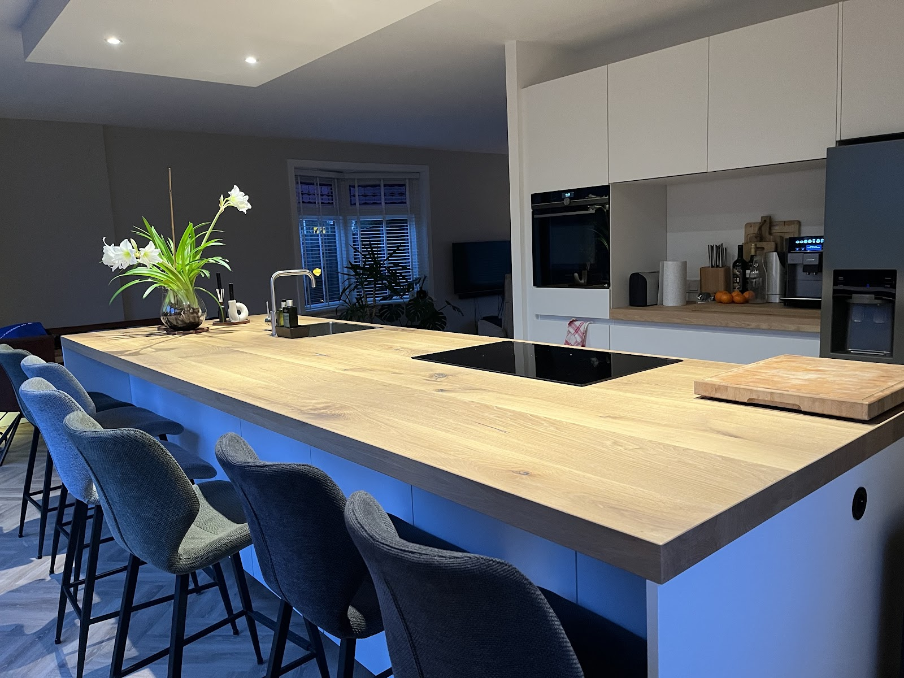
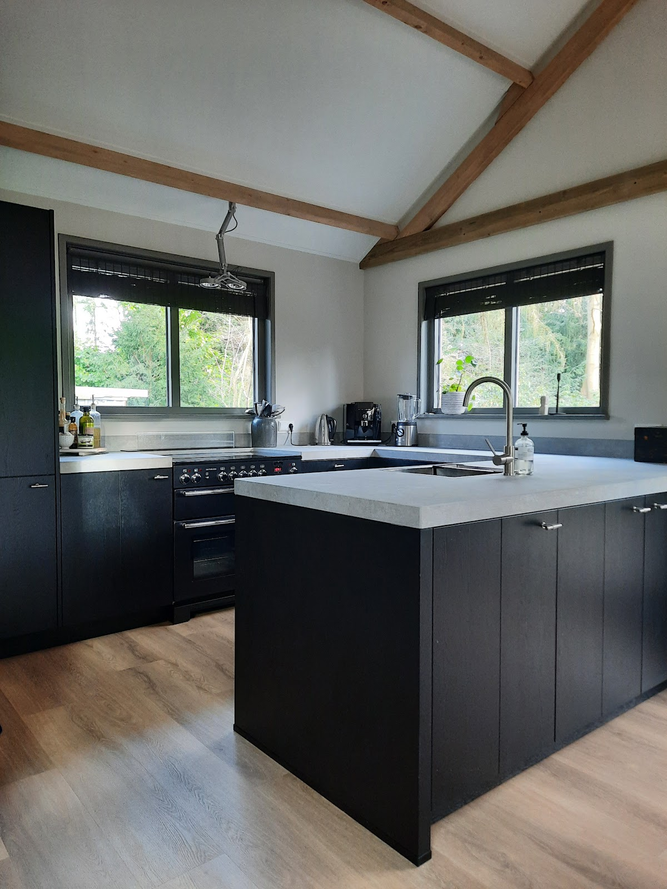
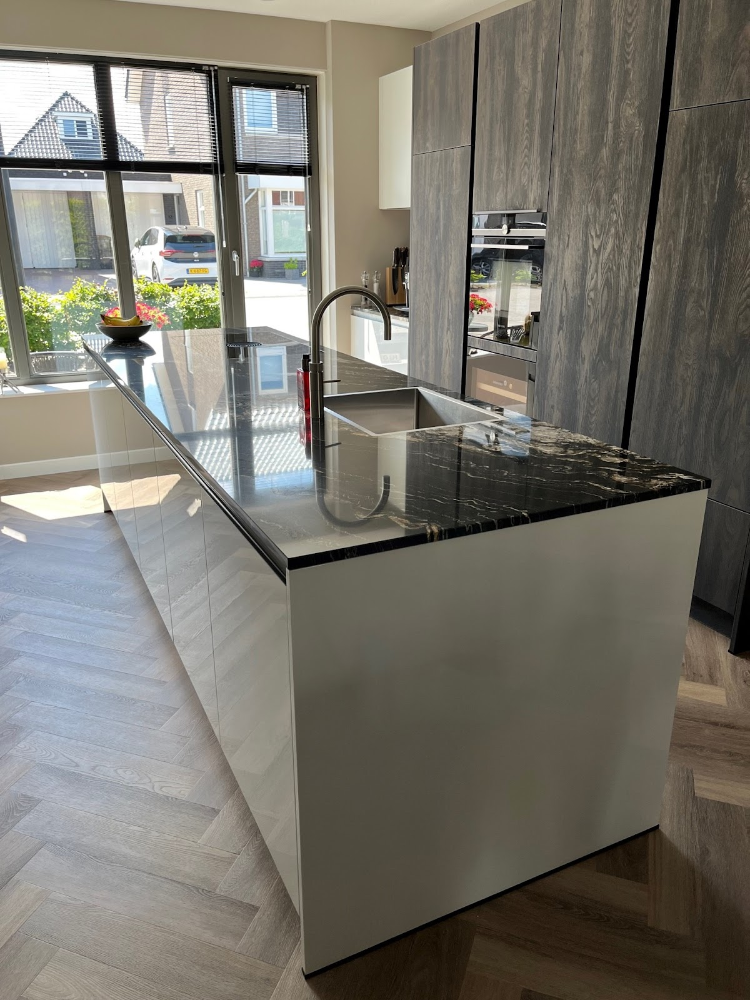
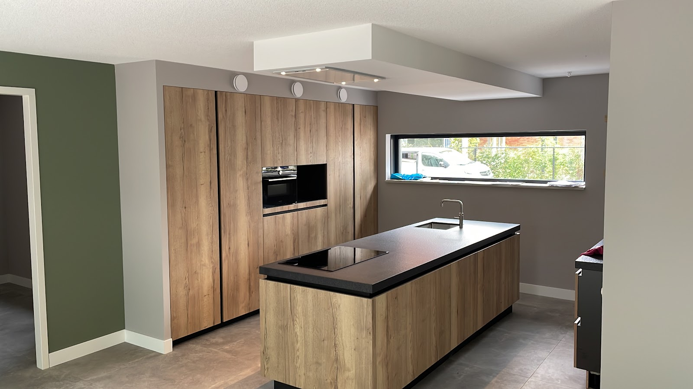
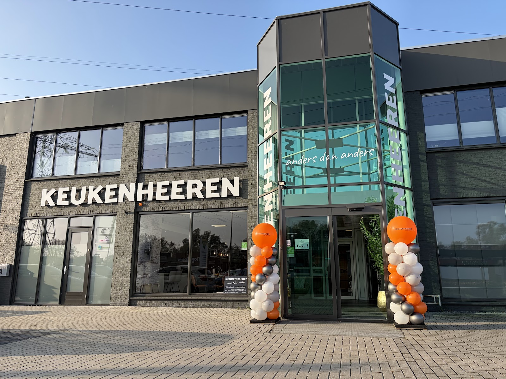

Keukenzaak in Zwolle
Alle tijd voor uw keuken.
Henry en Edo ontvangen u in de showroom zonder andere kijkers, of komen bij u thuis. Eén vast aanspreekpunt, van eerste schets tot de laatste kastdeur.
5,0 uit 117 Google-reviews

Henry Satink & Edo Brouwer
samen ruim 60 jaar keukenervaring
Zo gaat het bij ons.
Een keuken kiezen is een uitdaging: opstellingen, apparatuur, kleuren, materialen. Daarom nemen we er de tijd voor. Eén van ons begeleidt u van advies tot oplevering.
-
1
Kennismaken
U komt naar de showroom aan de Marconistraat en heeft die op uw afspraak voor u alleen. Liever thuis kijken naar de ruimte? Dan komen we bij u langs.
-
2
Ontwerpen
We werken met ons eigen merk Livello: Duitse degelijkheid met een Italiaanse touch. Geen standaardkeuken, maar met extra technische toepassingen die hem langer mee laten gaan.
-
3
Plaatsen
Onze eigen vakmensen monteren de keuken, met zorg en oog voor details en techniek. Het werk eromheen nemen we u ook graag uit handen.
-
4
Drie jaar later
Een keuken wordt intensief gebruikt. Drie jaar na aankoop stellen we uw keukenfronten op uw uitnodiging opnieuw af, geheel kosteloos.
Keukens die we mochten plaatsen.
Van mat zwart en greeploos tot warm eiken met een stenen blad. Kiest u voor Greenline-kasten van BioBoard, dan krijgt u zonder extra kosten een recyclebare en lichtere keuken.






Ook het werk eromheen.
Een nieuwe keuken is vaak meer dan kasten ophangen. Wij plaatsen de keuken en regelen wat daarbij komt kijken, zodat u niet zelf vijf vakmensen hoeft te zoeken.
Overleg wat er bij u nodig is- +Oude keuken demonteren en afvoeren
- +Leidingen verleggen
- +Groepenkast aanpassen
- +Aftimmering of plafondverlaging
- +Wand- en vloertegelwerk
- +Vloerverwarming
- +Stucwerk en schilderen
5,0 op Google
117 klanten gingen u voor.
“Een vakman maar ook een mensenmens: prettig in omgang.”
Erik Haverink over Edo
“Ontzettend blij met onze nieuwe keuken. Geplaatst in 1 dag en alles klopte in één keer. De Keukenheeren maakt het verschil door de service die zij verlenen. Alles is bespreekbaar en ze denken mee in oplossingen. Daarnaast wordt de keuken hoogwaardig (details als glazen zijwanden in lades, greep in zelfde kleur als fron…”
“Mijn vriend en ik zijn naar binnen gestapt na een tip van vrienden om maar eens te gaan kijken bij Keukenheeren. We hadden geen afspraak en we hadden niet door dat we hier direct zouden verder kijken naar opties. De eigenaar kwam in zijn montage outfit op ons af zonder boven op ons te duiken met allerlei aanbiedingen.”
“Super tevreden met De Keukenheeren in Zwolle! Van begin tot eind een fijne ervaring. Onze adviseur Denice maakte echt het verschil: ze luisterde goed, dacht creatief mee en vertaalde onze wensen naar een prachtige én praktische keuken. Alles verliep soepel, de communicatie was duidelijk en de montage was netjes en vak…”
“Aanrader! Edo heeft bij ons weer een prachtige keuken geplaatst. Goede service, mooie kwaliteit en heel prettig contact. Ook Lucinda heeft goed naar onze wensen geluisterd en dit vertaald naar een mooi ontwerp, met oog voor details en een slimme indeling. Tijdens het plaatsen werd er goed meegedacht en kwamen er prak…”
“Kan deze zaak aanbevelen! We zochten naar een keukenzaak die ons wilde helpen met vervangen van een bodemplaat van een keukenkast welke door lekkage van een kokend waterkraan niet goed meer was. Edo hielp ons daar prima mee ook vooraf per mail. Een vakman maar ook een mensenmens: prettig in omgang. Hij zorgde er ook vo…”
“No-nonsense en oog voor praktische zaken. Strak werk en dito prijs maakt dat we de Keukenheeren van harte kunnen aan bevelen!”
Twee heren, korte lijnen.
Door hun krachten te bundelen houden ze de lijnen kort, de communicatie helder en de kosten laag. Het resultaat: een mooie keuken voor een scherpe prijs.
Henry Satink
Een bekende in de Zwolse keukenwereld. Een doorgewinterde keukenman met gevoel voor precisie en afwerking.
Edo Brouwer
Monteert al ruim 25 jaar keukens op hoog niveau. Een echte allround vakspecialist.
Kom langs aan de Marconistraat.

Openingstijden
- maandag
- 09:30 tot 17:30
- dinsdag
- 09:30 tot 17:30
- woensdag
- 09:30 tot 17:30
- donderdag
- 09:30 tot 20:00
- vrijdag
- 09:30 tot 17:30
- zaterdag
- 09:30 tot 16:00
- zondag
- gesloten
Ook op afspraak of bij u thuis.